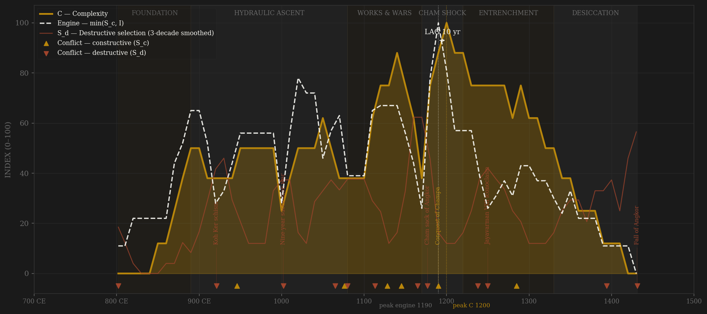
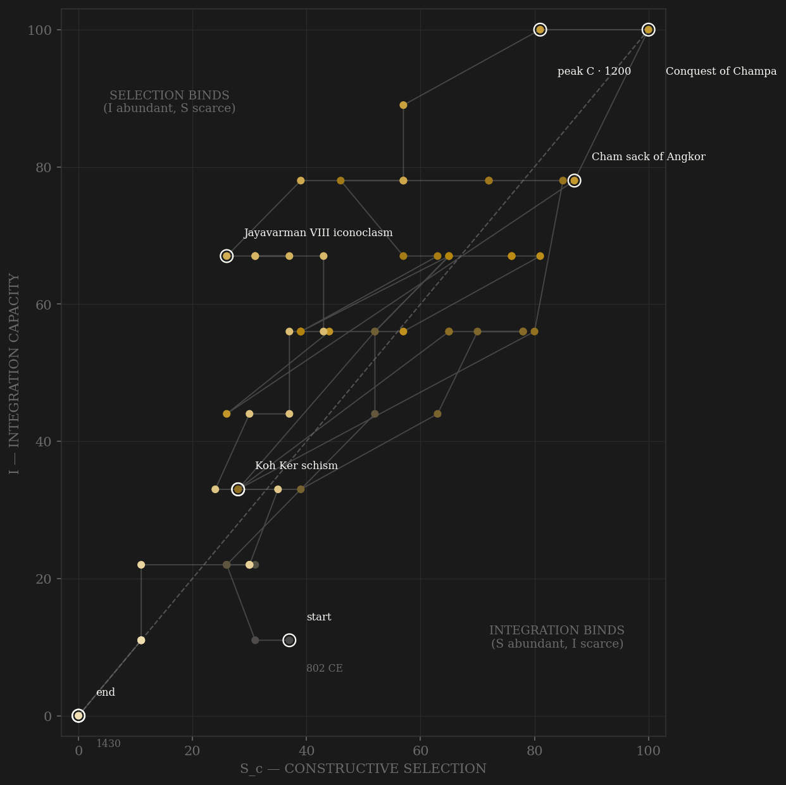

No polity in the sample makes the I-term as literal as Angkor. Integration here is not a coded judgment about bureaucratic reach — it is a grid of reservoirs and canals that the Greater Angkor Project physically mapped: the Indratataka (877), the East Baray (~7.5×1.8 km, 890s), the West Baray (~8×2.1 km, ~50 million cubic meters — the largest single reservoir of the preindustrial world, 1020s), the Jayatataka (1180s), stitched by canals into a low-density city that LiDAR measures at roughly 1,000 km², the largest preindustrial urban complex on earth. The arc climbs that build-out for four centuries, absorbs the 1177 Cham sack — the fleet came up the Tonle Sap and took the city, core penetrated — and then does what almost no polity does: rebuilds bigger. Jayavarman VII's decade-and-a-half answer put 121 rest houses on the royal roads and 102 hospitals across the provinces (both counted on his own stelae), conquered the rival that had burned the capital, and drove both the engine and complexity to their all-time peaks a decade apart — hence the SIMULTANEOUS verdict: catastrophe and reconstruction compress cause and effect into the same generation. The truer test hides in the first cycle: before the sack, the v2 engine peaks on Suryavarman I's oath-sworn service state (1010s–1040s) and complexity answers at Angkor Wat a century later — +100, squarely in the window. Then the ending, and it is the reason this page exists: the tree rings say megadrought 1345–1374 and again 1401–1425 (Buckley), the sediment cores say the canals silted and the network could not be reconfigured (Penny), and the last Sanskrit inscription falls in 1327 — the Integration term collapses, measurably, DECADES before Ayutthaya's army arrives in 1431. The framework's claim that I is the binding term has, here, a physical instrument reading.

The trajectory enters at the bottom-left with the 802 founding rite and climbs the integration axis in steps that are datable to individual reservoirs — each baray a discrete upward move. It crosses the diagonal early and, like Song, spends nearly its whole life in the selection-binds region: Angkor rarely lacked coordination; it lacked contest it could metabolize — successions settled by war, the foundation-market ladder repeatedly captured by hereditary priestly estates. The 1177 sack drags the path violently down both axes; the Jayavarman VII rebuild then traces the sample's steepest recovery diagonal, up and to the right, to the all-time I=100 corner around 1190–1200 — the state at maximum coordination, running roads, hospitals, and an annexed Champa. From there the path never turns up again: the Hindu reaction defaces the previous regime's works, the foundation market dies, and the trajectory slides down the integration axis for two centuries — silting canals, drying barays, a thinning archive — until it exits at the bottom-left where it began. Rome pins against the S=0 wall; Athens dies at altitude; Angkor drains.
Coded by locus and target, never by outcome. The Khmer ledger's signature is the matched pair separated by locus: the Cham wars of the 940s–1140s are B — frontier rivalry that disciplined the state — but 1177 is S_d, the same enemy arriving inside the core (Adrianople rule). The post-Jayavarman VII iconoclasm is the rarer coding: no army, no battle, yet thousands of Buddha images chiselled out of the state's own temples is violence aimed at the polity's own prior coordination apparatus — policy-S_d (Aurangzeb precedent). Sukhothai's secession ~1238 takes the Gao rule (defined on the Mali page, built this same session): the province leaving is S_d, the successor's wars afterward are B. And the chronicle-dated sacks of 1394 and 1431 carry reduced weight with the bias flag showing — Cambodian chronicles were compiled centuries later, and the archaeology (Penny 2019) reads 1431 as the endpoint of a long elite relocation, not a single annihilation.
| YEAR | CONFLICT | CODE | CODING RATIONALE |
|---|---|---|---|
| 802 CE | Founding consolidation (Jayavarman II) | Sd | Unification violence against rival Khmer lords; the chakravartin rite known only from K.235, a 250-year retrospective (○) |
| 921 CE | Koh Ker schism | Sd | Jayavarman IV establishes a rival capital — the court machinery itself splits for 23 years; two chanceries issue in parallel |
| 946 CE | Raid on Champa | Sc | External rivalry — the Po Nagar gold statue carried off (Cham epigraphy); frontier locus |
| 1002 | Nine-year succession war | Sd | Jayaviravarman vs Suryavarman I; fighting reaches Angkor, Ta Keo abandoned unfinished — the throne settled by exhaustion, not rules |
| 1065 | Kamvau's rising | Sd | A general turns his army toward the capital region; saved by Sangrama's loyal command (Baphuon-era inscriptions) |
| 1076 | Coalition war vs Dai Viet | Sc | Khmer contingents join the Song-led coalition — external peer contest at the frontier |
| 1080 | Mahidharapura displacement | Sd | A provincial house takes the throne; rival legitimacy persists at Angkor — succession outside rules |
| 1113 | Suryavarman II's usurpation | Sd | Kills his great-uncle 'leaping on the enemy king's elephant' (Ban That eulogy ○) — the apex settled by arms; the usurper then builds Angkor Wat |
| 1128 | Dai Viet campaigns | Sc | Invasion with ~20,000 men, 1129 coastal raids with ~700 vessels — hostile-source numbers from the Viet annals, taken as presence not magnitude; frontier locus |
| 1145 | Conquest of Vijaya (Champa) | Sc | Peak peer contest — Champa's capital taken and held to 1149; Suryavarman II dies on campaign |
| 1165 | Tribhuvanadityavarman's regicide | Sd | A palace official kills Yasovarman II and takes the throne — machinery attacked at the apex |
| 1177 | Cham sack of Angkor | Sd | Jaya Indravarman IV's fleet enters via the Tonle Sap, city taken by surprise, the usurper killed — external origin, total core penetration (Adrianople rule) |
| 1190 | Conquest of Champa | Sc | Jayavarman VII wins the rivalry outright — Champa annexed to 1220; the 1220 evacuation is the endogenous B-collapse (Ili precedent) |
| 1238 | Sukhothai secession | Sd | The Khmer governor expelled from the Menam outpost — a province becomes a rival (Gao rule: the secession is S_d, the successor's wars are B) |
| 1250 | Jayavarman VIII iconoclasm | Sd | Thousands of Buddha images defaced across the JVII temples — the state attacking its own prior coordination apparatus (policy-S_d, Aurangzeb precedent; defacements physically counted ◐) |
| 1285 | Mongol demand cycle settled | Sc | 1281 envoys detained, 1285 tribute agreed — the rivalry priced, invasion avoided (Chanyuan precedent) |
| 1394 | Ayutthayan sack (chronicle-dated) | Sd | Ramesuan takes Angkor per chronicles compiled centuries later (Vickery's skepticism ○) — coded at reduced weight |
| 1431 | Fall of Angkor | Sd | Borommaracha II takes the city after siege (chronicle ○); the archaeology reads gradual elite relocation southward (Penny 2019 ◐) — terminal either way: the capital and the hydraulic city abandoned as a state instrument |
| COMPONENT | GRADE | BASIS |
|---|---|---|
| I — Integration (the showcase) | ◐ archaeologically measured arc | Greater Angkor Project: Evans et al. 2007 PNAS (~1,000 km² urban complex mapped), Evans et al. 2013 PNAS (LiDAR), Fletcher et al. 2008 Antiquity (water grid). Baray sequence dated: Indratataka 877 → East Baray 890s → West Baray 1020s (~50M m³) → Jayatataka 1180s. Failure arc MEASURED: Penny et al. 2018 Sci. Adv. (14th-c. sediment plugs, network could not be reconfigured), Day et al. 2012 PNAS (West Baray core). Roads: 121 dharmasala (K.908), 102 hospitals (K.273) — countable |
| S_c — channel A, elite-entry (0.40) | ◐ anchors / ○ intensity | Temple-foundation patronage as elite-entry market, from the published inscription corpora (Coedès IC, ~1,300 texts): donor families entering via foundations — Preah Ko circle 879, Yasovarman's ~100 asramas, Banteay Srei 967 (non-royal founder), tamvrac oath K.292 (1011, service nobility registered en masse). DECAY: Sivakaivalya 250-yr cult tenure (K.235), priestly-estate hereditization, JVII gigantism crowding the private market, corpus void after 1327 |
| S_c — channel B, peer rivalry (0.30 HARD CAP) | ○ scholar-coded | Cham war cycle 946–1220, Dai Viet contests, Mongol demand cycle 1281–85 (priced, Chanyuan precedent), Tai/Ayutthaya rise. 1177 excised to S_d (core penetration). Viet-annal magnitudes flagged hostile-source |
| S_c — channel C, within-rules contest (0.30) | ○ scholar-coded | Rare by the polity's design — successions settled by council are exceptions. Yasovarman's managed sectarian pluralism (asramas across rival sects); the Jayavarman VII Buddhist turn = legitimacy revolution within royal ritual forms; Srindravarman's voluntary abdication 1307 |
| S_d — Destructive | ○ coded, events dated | The 9th–12th-c. contested-succession pattern (Koh Ker 921, 1002–1010, 1065, 1080, 1113, 1165), the 1177 sack, the iconoclasm (◐ defacements counted), 1295 coup, chronicle-dated 1394/1431 at reduced weight with bias flags |
| Sc_v1_combat (frozen synthetic) | ○ scholar-coded | Channel B alone (external-war-only, the prior definition's operative content) — no v1 page ever existed; synthesized per the Mughal/Gupta straight-to-v2 rule |
| C — Complexity | ◐ anchors / ○ between | LiDAR urban extent ~1,000 km² at max (measured); dated monument sequence 881→1295 (countable volume by reign); inscription counts per decade (corpus trend); Zhou Daguan's 1296 prosperity report (envoy ◐/○). Post-1327 decline partly archive artifact (Theravada wooden culture) — flagged, coded moderate |
| E — Entropy | ◐ tree-ring dated shocks | Buckley et al. 2010 PNAS: megadrought 1345–1374, drought 1401–1425, megamonsoon breach years between — the E term instrument-dated. Plague possibility flagged in notes, NOT coded (no direct evidence). Coded strain elsewhere ○ |
| R — Renewal (population) | ○ order-of-magnitude | Empire-wide millions ○; Greater Angkor ~750k at peak from GAP density work (◐). Shape defensible, levels not |
64 decade rows (802 off-decade founding row, then 810…1430) built by scripts/build_khmer_sicre.py — a straight-to-v2 contestability build (AMENDMENT_S_definition_v2.md): Sc_constructive = 0.40 elite-entry (temple-foundation patronage market from the inscription corpora) + 0.30 peer rivalry (hard cap, locus-cleaned — 1177 excised to S_d) + 0.30 within-rules contest; Sc_v1_combat = channel B alone, synthesized per the Mughal/Gupta straight-to-v2 rule (no v1 page ever existed). Channel ledger: data/raw/khmer/coding_ledger_v2.csv; audit: components_audit.csv; source grading + chronicler-bias table: data/raw/khmer/SOURCES.md. FROZEN-PROTOCOL LAG UNDER BOTH DEFINITIONS (3-decade centered rolling mean, engine=min(Sc,I)): v2 engine 1190 → C 1200 = +10 SIMULTANEOUS; v1 engine 1190 → C 1200 = +10 SIMULTANEOUS — no flip; unsmoothed identical. KNIFE-EDGE: smoothed C ties 1200/1210 exactly (Gupta tie precedent; idxmax takes 1200); taking the later decade gives +20 PASS — the verdict sits on the tie-break and is stated, not hidden. STRUCTURAL CAVEAT: the full-span lag is compressed by the 1177 catastrophe-reset — engine and C both peak in Jayavarman VII's rebuild, so cause and answer land a decade apart by construction. First-cycle sensitivity (802–1176 subset, pre-sack): v2 engine 1030 (Suryavarman I's oath-sworn service state) → C 1130 (Angkor Wat decade) = +100 PASS — reported as sensitivity, NOT the verdict of record. The page's analytical payload is the I arc: the hydraulic network's breakdown is dated by sediment cores and tree rings (Penny, Buckley) to the 14th c. — measured I collapse PRECEDING the 1431 political terminal by roughly a century. ○ halo caveat applies to the coded channels; the measured I backbone partially insulates the engine timing. Deep-uncertainty band after the last Sanskrit inscription (1327): channels coded conservative low-flat, archaeology carries I/E — fabricated worse than gap. Rebuild: build_khmer_sicre.py, then polity_report.py --slug khmer